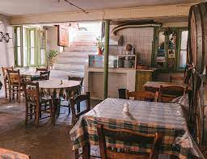

-

- Area: Syntagma | Historic Center
- Tip by Nikos: The oldest Bakery in Athens. Great place to start your day with a spinach or cheese pie
- How close to Syntagma Square: 4 min 🚶🚶🚶
-

- Area: Syntagma | Historic Center
- Tip by Nikos: One of the oldest and more traditional places to enjoy a souvlaki. You have to avoid the soulvaki tourist traps around Monastiraki square (e.g Mpairakataris --DO NOT GO THERE!!)
- How close to Syntagma Square: 4 min 🚶🚶🚶
-

- Area: Monastiraki
- Tip by Nikos: A must GO! A place to enjoy tsipouro and eat some really spicy food (like the "rocket" == very spicy)!
- How close to Syntagma Square: 12 min 🚶🚶🚶
-

- Area: Monastiraki
- Tip by Nikos: A nice hidden place to enjoy traditional greek homemade food. One of my favourites
- How close to Syntagma Square: 12 min 🚶🚶🚶
-
- Area: Exarcheia
- Tip by Nikos: This place used to be a schoolyard. Good food at reasonable prices.
- How close to Syntagma Square: 26 min 🚶🚶🚶 or 8 min by 🚕
-

- Area: Monastiraki
- Tip by Nikos: Here you can enjoy traditional dishes with a gourmet touch. It is considered expensive but it is worth it. You might need to make a reservation
- How close to Syntagma Square: 6 min 🚶🚶🚶